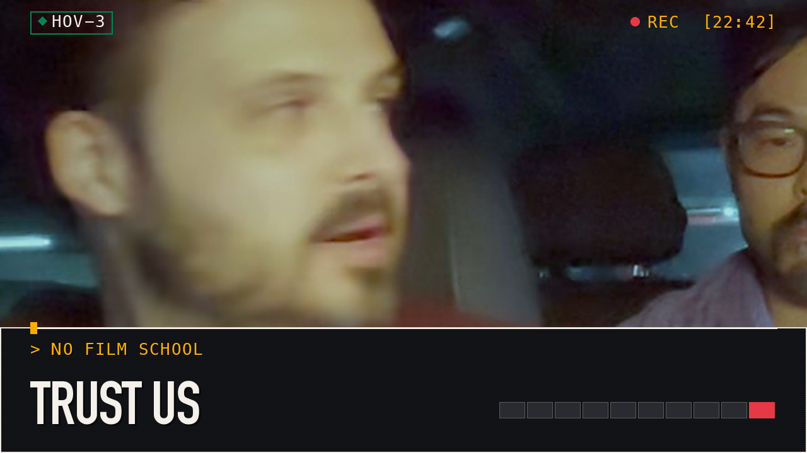

◊ Carpool Critics // EPISODE 2
Club Kid: Notes We Took in a Parked Car | Review

[ PREMIERES ]PREMIERES DATE TO BE ANNOUNCED // FULL EPISODE DROPS ON YOUTUBE
Club Kid (2026): Shane and Shane GPT
◊ THE FILM
CLUB KID (2026)
DIRECTED BY JORDAN FIRSTMAN
A hard-partying New York City club promoter sees his whirlwind lifestyle upended by the arrival of the 10-year-old son he never knew he had.
[ VIEW ON TMDB ↗ ]◊ FINAL TACHOMETER
◊ BEST MOMENT
“Shane and Shane GPT. Shane and his bots. Shane GPT. Okay so welcome back to Carpool Critics episode 2. Today we have our wonderful Alex. Ale...”
◊ CHAPTERS
- 00:00The Hook: The Worst Possible Question
- 00:23The Hook: The Worst Possible Question
- 01:43Guessing the Rotten Tomatoes Number, Unearned
- 11:59Spoilers and One Unnecessary Theory
- 18:24Scorecards Nobody Agreed To
- 21:12Outro: The Car Survives
◊ PARTIAL TRANSCRIPT
45 raw turn(s) were cut from the master and are not shown. This is the dialogue that survived the edit.
I had almost no expectations going in. I didn't see any trailers, didn't read any descriptions. So just purely going off the title, I knew it would be about a club. That was about all I knew. So I figured it would be very emotional because that's a lot of A24 films, but that's all I thought going in. It
was a club with kids, right?
Didn't quite expect that.
Shane and Shane GPT. Shane and
his
bots. Shane GPT. Okay so welcome back to Carpool Critics episode 2. Today we have our wonderful Alex. Alex. Dave.
And
Shane here in the passenger seat. And we will be reviewing what we just saw which was Club Kid. This was directed directed by Jordan Firstman who also played what looks like the main character Peter who was a washed up New York City underground club promoter and we also had the oh so wonderful Reggie Absalom who played Arlo his 10 year old son he never knew he had we had Cara Delevingne who played Sophie who was his fellow promoter and then a bunch of other people like Diego Calva Kirby helped Baptiste Edgar Izgundarov. Sorry you played Nikki. You were really good. I enjoyed you in that. And then Colleen Camp played Evelyn. And so what we'll get started off here is just a little quick like vibe check of no spoilers of course. But what did each one of us expect walking in based based only on essentially like the poster and premise, right? I'm gonna start off with Alex. All right, I had,
Dave?
So you just imagine a bunch of kids in a club just partying it up. Yeah, of course. For me, I did see the trailer, and I also did grow up very close to New York City. so um i kind of expected more of the club and but there was yeah i mean the movie is what it is right it tells you what it's about essentially there's a clubbing guy and there's a kid and my expectations going into the film were exactly pretty much how the film portrayed itself as I was watching it.
Similarly to Alex I did no research outside of what I was producing here which was the the Shane GPT summary type thing and so I got I got the the the IMDB two sentence intro and so I'm like okay this is like a I was expecting a cute story about a club promoter becoming a good father essentially based off that description and then knowing A24 I was expecting a ton of like color grade stuff and hype which with the the we'll call it the the line we were sitting or standing in there was a lot of hype that was a really long line at the draft house okay next up we're going to end up uh reviewing our Rotten Tomatoes scoreboard from last time um I'll give everyone's everyone's guess real quick and then we'll give who ended up getting points and so and there's
going to be a link to that uh to that movie right over here right
I mean
did I have video?
No clue Maybe in the description We'll see if my robot does something about that But for the critics guess The movie was Whalefall The critics guess for me was 65 % Alex ended up being 44 % And then Dave had 59 % for the critics guess And of course I ended up taking the point point for the critics guess with the 65 % and the critics had a 71 so it was only off by 6 % very close very very very very close and then for the audience guess uh I ended up having 55 Alex had 62 and then Dave ended up with 69 nice and then uh Dave ended up securing the point on that so we We have a point for Shane, point for Dave, and Dave was off by 13%. The actual score was 82 % at the time of me getting these Rotten Tomatoes scores. So I gotta
get it today. Yeah,
you gotta get it today. Yeah, it's my turn.
Most definitely need that point.
Yeah. Okay. So, how this ended up, normally I feel like we would end up locking in our Actually, let's do that and then I'll do our non -spoiler take questions after that. And so, for this wonderful movie club kid, let's go around giving our critic score for each one of these and what we guess and I'll enter it in on this app I created. And so, let's start with you. And we'll go that way. Cool. Just critic. Let's start with critic. Alright. And explain why.
Alright. I think the critics are gonna really like this one. I'm gonna give this one a critic score of 89.
That's high.
Yeah. Reason why? I think that it does a really good job of getting you to fall in love with complicated characters, which I think critics tend to really like. and the story I think was unique enough and I think that that's what a lot of critics look for is something that's distinctive and I think that this story was pretty distinct and so I think critics are gonna like those two elements hmm
so
89 89
okay Dave what you got I'm a fluctuating between a 79 % and an 81 percent um take the middle i think i'm gonna lean towards 81 percent um primarily because i'm not a24 films usually gain high scores um just being an a24 film in a24 films they're always like there's 500 000 stories to tell and everyone's got a different story to tell and we're just gonna tell them and so i applaud um them telling this story um but i don't think it hit what it was trying to achieve very well i think it did its job but i don't think it far exceeded did that job um it was subtle um at times subtle but at times a little overt um in terms of what it was trying to convey um what was he trying to convey just
the dad
and his son yeah well i mean i don't know if we're going to go into it yeah yeah okay yeah i
forgot we can't spoil we can't spoil okay yep okay uh i think i think dave is is right on the money of a lower score alex i'm gonna i'm gonna end up taking a little bit opposite i do think nowadays a24 films tend to get a little bit higher score but i think this is going to be divisive because i think critics and people in general this is also going to bleed into my audience score i'm gonna have a hard time connecting with the story. I think if the story was like a general street father I think there is going to be something about that. And it's going to be divisive. And so I think it's going to it's all going to be a high score but I think it's going to end up being somewhere around a 70. For critic score. For a critic score. And it'll just be whether or not they can actually connect to the story. and the story is uh uh we'll call well we can't talk about it okay i can't talk about it okay and so i disagree with
what you just said but yes let's move on yeah this is a good range here yeah you need to
disagree you need to disagree about 10 per answer so that's good yeah and i it's it's also like i also need to take into account what critics would actually go see this movie too right and i think people more critics would enjoy it than not enjoy it and so that's why i think it's gonna skew on 70 but i think it is going to be divisive
all right so now fan score starting with you going backwards fan
score with me i think fans are going to love it because the people are going to see it so i think this is going to get a 92. i think it's going to be i think it's going to be a banger and so um reason why i was looking at the audience and and who and the vibes that we got throughout the audience, laughter, tears, everything. It's like an emotional roller coaster. And if you can sway the audience, even me, I was tearing up during it. If you can sway the audience like that, it's gonna have a high, a high 90s. Well, I put it low 90s, but I'm hedging my bets.
High and it's in the 90s. Yeah, high and
it's in the 90s. Okay, Dave.
For me, I also agree because I feel like this is a very younger film targeted to a younger generation. And for me... We had all these other types of kind of grungy films, but with not such a positive light at the end of it, so that is kind of interesting. It's taking the grungy lifestyle and putting a positive kind of light towards it. So I think I'm torn between whether people, the younger generation is going to go or if it's more marketed towards people our age who may have clubbed and maybe now have, you know, our parents and all that being said, I'm going 86%.
86. Nice. Okay. Alex, round us off.
Am I allowed to give the same score?
You have to be off
by one. Okay. I think fans are going to... You said 92. I said 92. I'm going to... Go on either the upper end or the lower end. Yeah. I'm going to be 90. I think that they're going to like it for all the reasons that y 'all just said. I think...
oh maybe even want to go higher no i'll stick to 90 i'll stick to 90 um i think that the the full range of emotions like you were saying i think is going to really capture people i think like i mentioned earlier with the critic score of like very connective complicated characters i think if you're going to see an a24 film that's probably the expectation and i think they did a good job of pulling that off and And so, yeah, I think that's my score. 89 critic, 90 fan.
There you go. Mine was a 70 critic, 92 fan. And Dave's, if you don't remember. Yeah, yeah. 81, 86. 81. 81 critic, 86 fan. So going on to audience recommendation. The question I'm queuing up for everyone is, so it's basically it's like I'm gonna read it out who is the number one person you would recommend Club kid to and who's the absolute worst person you could accidentally watch this movie with that's more like who would you recommend it to that would like it right and who would you not recommend it to
okay so yeah
Spoilers. We're in spoiler territory. Yeah. is when he was a mess in front of Cara Delevingne and passed out during an interview. That was probably his lowest point during the film. And I still was not thinking he's a terrible human and I'm not going to root for him. I don't think the film ever really tried to portray him in a super negative light. yes he had struggles he had addictions but he was not a bad person
I would say to me he seemed like a selfish person and then his his character arc like it I mean you start rooting for him as soon as Harlow comes into his life right because it's very overt where they're like oh hey this kid's gonna change you you're gonna be better but you're still gonna fail because you're you're a but the question is like
when did you start yeah so you didn't root for him to get better to get like i
i was i was i was not rooting for him in the beginning no i was trying to understand him as a person as soon like i started rooting for him as soon as like the kid because i'm like oh okay like immediately my brain's like okay you got to be a better person and so I'm very probably the stereotypical and that maybe possibly maybe
move judge II yeah
I
feel like I feel like there's kind of like two leaps in me liking him more because at the beginning I'm not like I know that I'm going to grow to like this character I don't particularly just like like him from the beginning like he just um yeah it comes across a little selfish a little immature um i say the two leaps for me were there was a big leap in time when you kind of start to see him taking care of a friend who's like live crashing on his couch basically and you kind of see he's like impatient with this person but also giving this person a hand and so i was like okay this person's a little more mature now so I started to like like him a bit more and then I think that there's a scene where the kid gets sick while eating like basically is lactose intolerant and just the it's a very comedic scene it's very funny but I think it's also a very realistic parenting moment where a kid doesn't communicate that he's allergic to something and then the parent is suddenly cleaning up and trying to like help this kid even though it could have just been solved with the kid just saying like oh yeah i'm allergic to cheese i'm lactose intolerant and i just think that moment of him having to like step into the role of being the parent who has to be the brain for the child who isn't communicating for himself i think that really kind of like took him a step or two ahead also there's
there's a bunch of there's a bunch of other moments too yeah
there's a lot of good connective moments oh
yeah i think we were still i think the way It was 10 years later after the opening scene. I didn't make an assessment of him at all in that opening scene because it's just an opening scene. There's no real character development there. And I think what I mean when the film didn't really portray him in a negative light, the film started 10 years later and you see him helping out Nicky. on the couch and you could tell like he is willing to help people and I I don't usually I never really cast judgment on negatively on people who are willing to help you
yeah well yeah to push back on that a little bit I think the opening scene was kind of setting the lead character up as we are expecting them to be kind of this like like, sleeps all day, is up all night, partying, lots of hard drugs, and so from the get -go, that's not, like, I kind of, from that opening scene, I was like, oh no, what movie did I sign up for, because I was wondering if that would be the whole film, it's just a lot of late night clubbing, which isn't really my vibe, and so from the get -go, I kind of had a, like, am I gonna, like, like this character, I kind of, like, started questioning that, and then when it kind of fast forwarded to the modern time of the film very shortly after that is when I'm okay I do start to like this character he's a little older a little more mature but like from the get -go from that opening scene I was like kind of questioning whether I would like the film and like the character much because it was just like so much hard drugs and just like a nightlife that I don't resonate with my
brain still thinks you can be you can help people and still be selfish true it's a good call too but i agree it's like with your you you can still you can still root for someone right yeah coming into a movie so it's not wrong yeah there's differing opinions yeah i
like i think it's better when it varies like that when we have different ideas of where we start to connect with the person
read it's a good time okay um there's i like this question it's a scene stealer award but between Arlo so Reggie, Absalom, Cara Delevingne, Sophie and then Nikki the freeloading Azerbaijani roommate waiting on the six -figure philosophy job that's a great description who stole the movie whenever what scene they were in essentially it's like who was your favorite character that's what the question's asking um
the son What's his name again? Carlo.
Carlo.
But what's the actor's name?
Reggie Absalom. Reggie, yeah. I think
he did a fantastic job. What is interesting, when they introduced Reggie to us, he didn't say a single word for a very long time. And it was more about, I think, focused on, again, what's the main character's name?
Oh, main character... Peter, okay uh coming back our our camera ended up overheating and so dave was talking about how he was super emotionally connected it was one of the best things and to me i think it was good i'm somewhere in the middle what i thought for peter in the ending was essentially reflected his life complicated filled with pain bad decisions causing bad actions essentially and so So he has to figure out in his life what is good for him. And, oh, I just realized I'm talking about the wrong thing. Here we go. So hopefully I was talking loud enough to hear that. But it's basically he's just figuring out what works for him. And what works for him apparently is boring compared to taking drugs at a club. Who would have thought? Who would have thought? Okay. Okay, and so the final sort of thing that I wanna wrap up everything with is, we need to coin this. So if for some reason someone sees this, we need a better word than tachometer score, which means one out of 10. And so if you think of a fun thing like the.
But anywho, 1 out of 10. Feel free to give it a decimal. How would you end up rating this movie? Alex, I'm going to start with you.
Okay. I will rate it a 9 out of 10. I really liked it.
Okay. And then... Dave?
So this is a personal score that you give. Personal score. Nine is a perky score. You're supposed to give decimals, by the way. Oh. I will give it a 7 .4 out of 10.
7 .4. I was tearing up. If a movie makes me tear up, that means it's good. And so I'm going 8 .8. Nice. Would I watch it again? Probably not, but it was still good. I'd recommend it to people.
I would watch it again, but I would do it because I like discussing movies with my wife, and so I think in probably six months I'll think about this film again and be like, hey, we should watch this film and nudge her to do it so we can keep talking about it, which to me is the epitome of a good film, is when I want to talk about it more with people, which is part of why we do this.
Yeah. Yeah.
So I'll probably watch it again.
Sounds good. Okay. That's it for episode two. Come back next time when we talk about something else. We don't know yet. We
don't have it on the calendar. Yeah. If you have free tickets to a movie and you want to send them to three carpool critics, we'll go see your movie.
And then we'll talk about it.
Okay. Bye.
Bye. And we'll record for a little bit. And then we're good. We're talking about it. Yeah. But yeah, overall it was a great movie. Um, yeah, I'm not sure what else to say about it. There's a
lot more I do want to say. Yeah, for the episode. Yeah, okay. the film. I cannot recall a single film where there was that much emotional weight behind a phone call. The one year later, the third party involved Susan being there preventing a relationship. That struggle with Arlo trying to be respectful. and also terribly hurt and upset and grieving I think out of all the scenes that Arlo did I had issues with some of his scenes I think he's he did a phenomenal job of directing the film there were certain you said he he was probably your second favorite but I think there were certain scenes Arlo didn't deliver as well as he could have as well as say a more established actor um but that final scene with them on the bed with the phone call it was simple it was understated but the emotional weight was incredible like i could feel the weight of that emotion playing out in that scene over cell phone towers right and i can't cannot think of another film where